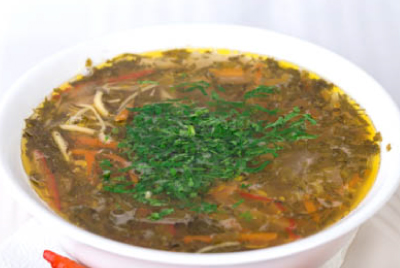
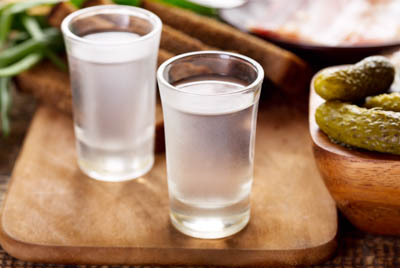
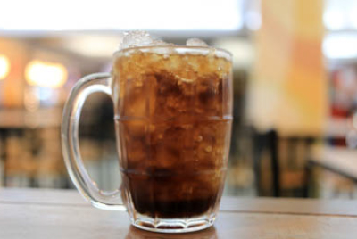

Russisk ringbrød efter en klassisk opskrift fra Karapatien. Dejen blandes koldhæver 30 dage, inde brødet bages over bål. Meget sprødt, godt med Karapatisk bjerggedsmør.
Russisk ringbread af Karapatisk mel
29,00 kr
Caviar bruschetta
Til denne dejlige Bruschetta anvender vi kun de dejligste sibiriske Caviar. Caviarerne presses ud af fiskene mens de stadig er levende, og vædes derefter i Putinka Vodka. Der er masser af bjerggedesmør på bruschettaene.
Brushcetta med russisk Caviar
49,00 kr
Baltic farmers soup

Baltisk bondesuppe er en solid starter. Godt til dig, der skal drikke godt igennem under måltidet. Suppen består af ged, grønt og masser af løg.
Baltisk bondesuppe en solid starter
79,00 kr
Bochkarev beer
En halv liter Bochkarev fadøl
En halv liter Bochkarev fadøl
55,00 kr
Voda-vodka

Voda-vodka - en vodka brygget på det pureste vand af smeltet sne fra Sibirien. Passer godt til alle hovedretter
Voda-vodka - vodka irigelige mnAENgder
19,00 kr
Gloske (cola)

Gloske - russisk for Cola - fra bryggeriet Iznogoud